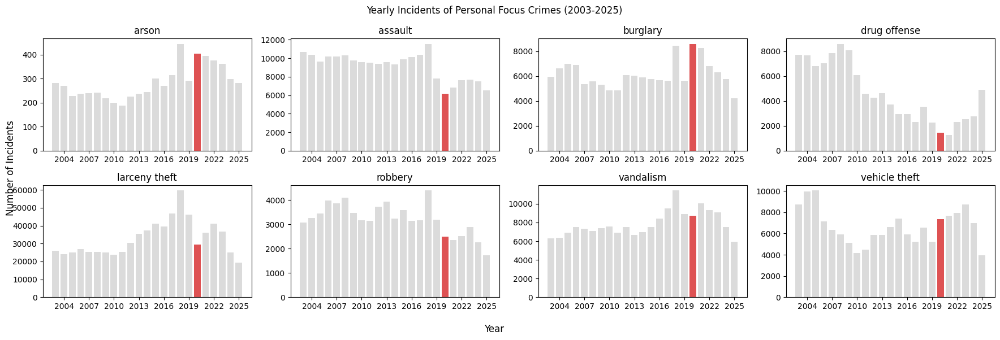

To understand how crime changed during the pandemic, it helps to step back and look at the longer time series first. Most crime categories in San Francisco had year-to-year variation, but no sharp structural break before 2020. When COVID-19 restrictions began, several categories changed at the same time.
Assault, robbery, and larceny theft fell relative to the previous year. Drug-related offenses also declined, although this should not be read only as a behavioral change: it may also reflect changes in policing and street-level enforcement during the early pandemic period. In contrast, burglary, vehicle theft, and arson moved upward in early 2020, consistent with a shift in the opportunities available to offenders.
Long-term trends show that 2020 was unusual, but not in the same way for every crime type
The figure below shows yearly incidents of Personal Focus Crimes from 2003 to 2025. The year 2020 is highlighted in red to mark the onset of COVID-19 restrictions. The visual pattern is mixed: interpersonal crimes generally fell, while several property-related categories did not.

Aggregate yearly counts are useful, but they do not show when the changes happened within the year. To study the lockdown period more directly, it is better to move from yearly totals to monthly patterns.
Monthly patterns make the split between interpersonal and property crime easier to see
The interactive chart below shows the normalized monthly distribution of crimes from 2003 to 2025. You can switch between categories and compare how each crime type is distributed within the year. This makes it easier to inspect whether changes after the stay-at-home orders were broad or category-specific.
Crimes that depend strongly on human interaction, such as assault, robbery, and larceny theft, generally declined after stay-at-home orders reduced movement and public contact. Drug offenses also moved downward, but that change likely reflects a mix of behavior and institutional recording effects.
Property crimes followed a different pattern. Burglary, vehicle theft, and arson increased in early 2020. Closed businesses, less street activity, and unattended vehicles created different risk conditions than those seen before the pandemic. Vandalism, by contrast, remained relatively stable.
This is the main substantive result of the page: the pandemic did not simply reduce crime. It altered the opportunity structure. Some offenses became less feasible, while others became easier.
Burglary hotspots shifted as the city emptied
Temporal change is only part of the story. Burglary also changed geographically. The animated heatmap below tracks reported burglary density from January 2019 to December 2021 and shows how hotspots moved before and after the start of the pandemic.
Before 2020, hotspots were concentrated in the downtown core and major commercial districts. After March 2020, the pattern spread more clearly into residential areas. This is consistent with a city in which natural surveillance weakened and offenders shifted toward unattended property.
The broader conclusion is that crime is closely linked to routine activity and the urban environment. When the pandemic changed where people worked, moved, and interacted, the spatial and temporal pattern of recorded crime changed with it.
Notes and reuse
This page is styled to resemble the editorial structure of Our World in Data: a narrow reading column, strong hierarchy, chart-first sections, figure captions, and a simple navigation system. It is not a copy of their branding, logo, or components.
To publish this as a personal website, upload the full folder to GitHub Pages, Netlify, Vercel, or any static host.
Keep the assets folder together with index.html so the embedded figures continue to load.